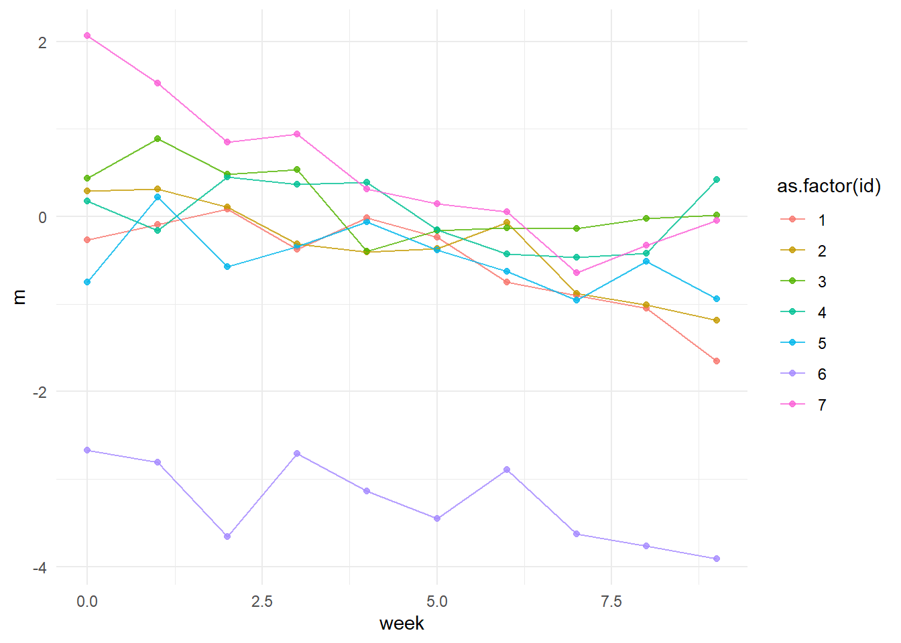

My goal here is to build a model that describes the essential aspects of the data-generating process that our statistical test will attempt to estimate.
Each individual will be part of either the IU treatment group or the MC treatment group. For the duration of the treatment, the mediator is assumed to gradually change in an approximately linear way. Before considering the comparisons between groups, let’s first imagine a patient in one group with a changing mediator, \(m^a\). The residuals of the model \(\sigma\) is assumed to be normally distributed with a mean of 0. \(t\) is a variable that represent time, which can be weeks from 0 to 9.
For now let’s just imagine the data-generating process for a single patient. When generating data parameters like \(\alpha\) and \(\beta\) will have “priors” that determine the distribution that data-points are drawn from. For our purposes now the input in those distribution functions are somewhat arbitrary, and they do not represent any thought through Bayesian priors. Because I’m not yet trying to model uncertainty, I’ll skip specifying \(\sigma\) as a distribution, instead it will be set to = 0.3.
\(\alpha\) now contains the normal intercept (week = 0) standard deviation for the mediator, while \(\beta\) represents the average slope of the mediator, as well as the heterogeneity of slopes. Let’s simulate and plot 1 patient:
Some additional things to be explicit about: \(m_i\) is changing linearly, if not for \(\sigma\). This \(\sigma\) can be seen as representing both “measurement error” and exogenous influences. While our treatment is hypothesized to affect the mediator, it is not likely to be the only thing affecting the mediator. We also imagine that the change is heterogenous; the treatment is not expected to work equally for everyone.
Now let’s model how this might look for many different patients \(j=1,...,n\). The value of a datapoint \(\mu_i\) (if not for it’s error/exogenous influences) can now be given by this formula:
The only thing that has changed is that we’re now imagining that the slopes and intercepts beloing to many different patients. To generate this we could simply loop the code many times.
n <-7#note that the code calls nr patients "n" instead of j.mediator_intercept_sd <-1avg_mediator_slope <--0.1mediator_slope_sd <-0.05weeks <-0:9sigma <-0.3rho <--0.15df <-data.frame(m =c(), week =c(), id =c())for(i in1:n){m_1 <-rnorm(1, 0, mediator_intercept_sd) +rnorm(1, avg_mediator_slope, mediator_slope_sd)*weeks +rnorm((length(weeks)), 0, sigma)df <-rbind.data.frame(df,data.frame(m = m_1, week = weeks, id =rep(i, times =10)))}
In real data it is common to see a negative slope-intercept correlation where a higher value on an individuals \(\alpha\) would be associated with a more negative \(\beta\). Our data-generating process should model this as well. To achieve this we need to let intercepts and slopes them be drawn from a multivariate normal distribution.
\(\Sigma\) now represent a common covariance matrix for the slopes and intercepts. The diagonal of the matrix represent the intercept and slope variances for earlier, but we now also have a \(\rho\sigma_\alpha \sigma_\beta\) that represents the correlation. When generating data I’ve set it to -0.15.
Updating the code and looping for 7 patients looks like this:
#Now with slope-intercept correlationn <-7#note that the code calls nr patients "n" instead of j.mediator_intercept_sd <-1avg_mediator_slope <--0.1mediator_slope_sd <-0.05weeks <-0:9sigma <-0.3rho <--0.15# Set up multivariate normal parametersmu <-c(0, avg_mediator_slope) # means for intercept and slopeSigma <-matrix(c(mediator_intercept_sd^2, rho * mediator_intercept_sd * mediator_slope_sd, rho * mediator_intercept_sd * mediator_slope_sd, mediator_slope_sd^2), nrow =2, ncol =2)df <-data.frame(m =c(), week =c(), id =c())for(i in1:n){# Generate correlated intercept and slope for this participant params <- MASS::mvrnorm(1, mu = mu, Sigma = Sigma) alpha_i <- params[1] # intercept beta_i <- params[2] # slope# Calculate values for all weeks for this participant m_1 <- alpha_i + beta_i * weeks +rnorm(length(weeks), 0, sigma) df <-rbind.data.frame(df, data.frame(m = m_1, week = weeks, id =rep(i, times =length(weeks))))}
Let’s plot it:
p <-ggplot(df, aes(y = m, x = week, group =as.factor(id), color =as.factor(id))) +geom_point(aes(y = m), alpha =0.8) +geom_line(aes(y = m), alpha =0.8) +theme_minimal()print(p)

Modeling the outcome
The outcome (worry symptoms) we imagine will be affected by treatment in a similar way, decreasing linearly as patients spend time working with the treatment protocol, while being measured with some degree of error. Importantly the outcome will be partially affected by the mediator and partially will have exogenous influences.
We can expand the model to now instead describe two results \(y_i\) and \(m_i\). Since we model two “outcomes” we also get two residuals \(\sigma_y\) and \(\sigma_m\).
A lot of things have happened in this step. Our alphas and betas now have subscripts that both relate them to either the outcome or the mediator. We’ve also added a \(\gamma_j\) which describe the effect of the mediator. Note that this now assumes a constant mediator-outcome relationship for each participant \(j\). Note Not centering the parameter meant it basically pushed y values further from zero. Now while centered it instead represents some sort of average slope of the mediator (balancing on an axis in the middle of the dataset…) Constant in the sense that it doesn’t vary over time; the relationship is however allowed to vary by participant.
Importantly we now have a joint covariance matrix \(\Sigma\) that structures the multivariate normal distribution which all individual level parameters are drawn from.
Where \(\alpha_{m,j}, \beta_{m,j}\) are mediator intercept and slope for participant \(j\). \(\alpha_{y,j}, \beta_{y,j}\) are their outcome intercept and slope, \(\gamma_j\) is their mediator-outcome relationship.
These slopes and intercepts drawn from a multivariate normal distribution. Like before \(\sigma_{\alpha}\) and \(\sigma_{\beta}\) describe the intercept standard deviation and heterogeneity of the change over time, but they now have subscripts that specify whether they belong to the mediator or the outcome. We describe heterogeneity of the mediator-outcome relationship with \(\sigma_{\gamma}\).
We now also have ten (!) \(\rho\) terms that capture the correlations between individuals slopes and intercepts.
Let’s think through these one by one!
\(\rho_{\alpha_m,\beta_m}\) is the slope-intercept correlation that we previously defined in the model without the outcome. This should probably be slightly negative to reflect that people who are already at a high level in the mediator tend to have less room to get even worse (and vice versa). A “regression towards the mean”-like effect.
\(\rho_{\alpha_m,\alpha_y}\) is the correlation between the intercept of the mediator and the intercept of the outcome. This should be moderately positive to reflect that individuals with a high level of our mediating variable (e.g. intolerance of uncertainty) tend to be more worried (at the start of treatment).
\(\rho_{\alpha_m,\beta_y}\) is more conceptually tricky. This represents whether individuals high on the mediator at start of treatment tend to change more in the outcome. My stab at it would be that this should also be a slight negative correlation, but probably weaker than the slope-intercept correlation for the mediator itself.
\(\rho_{\alpha_m,\gamma}\) represents the relationship between an individuals mediator-outcome relationship, and their initial level of the mediator. For example, do individuals with a higher level of negative metacognitions beforehand also have a stronger overall relationship between their negative metacognitions and their worry? I’m not sure what to make of that. My first hunch is no; while there would be an overall relationship between the mediator and the outcome, \(\mu_\gamma\), it wouldn’t necessarily vary by initial negative metacognition level.
\(\rho_{\beta_m,\alpha_y}\) is similarly tricky but like \(\rho_{\alpha_m,\beta_y}\) I would argue for “slightly negative but less so than within variable intercept-slope correlation”
\(\rho_{\beta_m,\beta_y}\) is potentially a very relevant parameter of interest. This should be positive. Individuals whose mediator change more should have outcomes that change more.
\(\rho_{\beta_m,\gamma}\) is also tricky. It represents how mediator slope relates to the mediator-outcome relationship, for a given participant. One could perhaps frame it as a type of individual differences in treatment response. Perhaps participants where the mediator changes more are the same participants where the mediator is strongly related to the outcome. Now that I type it out, that sounds pretty reasonable.
\(\rho_{\alpha_y,\beta_y}\) is the slope-intercept correlation for the outcome. In line with previous reasoning: probably slightly negative.
\(\rho_{\alpha_y,\gamma}\) is the relationship between initial worry and the mediator-outcome relationship. Since that’s the flipside of \(\rho_{\alpha_m,\gamma}\) similar reasoning should hold.
\(\rho_{\beta_y,\gamma}\) is also tricky. It should probably be similar to \(\rho_{\beta_m,\gamma}\), so that those whose outcome change more tend to have a stronger mediator-outcome relationship (since we’re imagining they change because of the changing mediator.)
Finally we can complicate the model even further by adding a correlation between the residuals (\(\sigma_m\) and \(\sigma_y\)). The outcome is then instead a linear predictor \(y_i = \mu_{y,i} + \epsilon_{y,i}\) and \(\epsilon\) comes from a multivariate normal distribution that contain both \(\sigma^2_y\), \(\sigma^2_m\) and their correlation \(\rho_{\epsilon}\sigma_m\sigma_y\).
Should we posit such a relationship? I think it’s unclear. We’re then saying that despite all these things we’re describing, our \(\boldsymbol\mu\)s and our \(\rho\)s and our \(\gamma\)s, there’s still an additional, not yet captured, relationship between the mediator and the outcome.
The code below contains it, but I will set the relationship to zero when generating data.
(Note. Unlike the previous code I haven’t done any checks on whether this fully works).